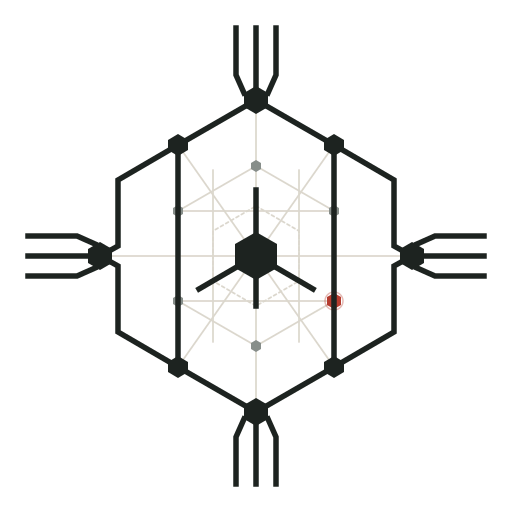
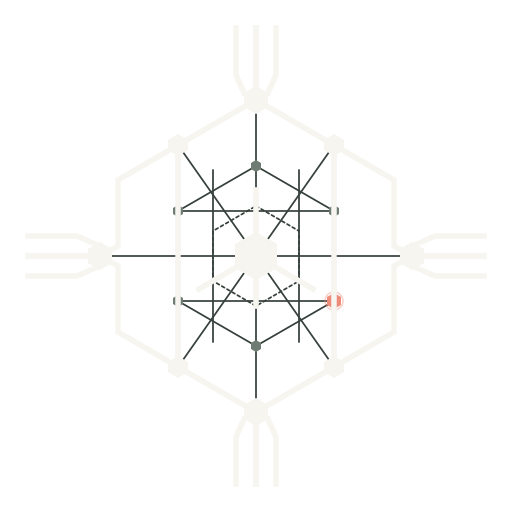
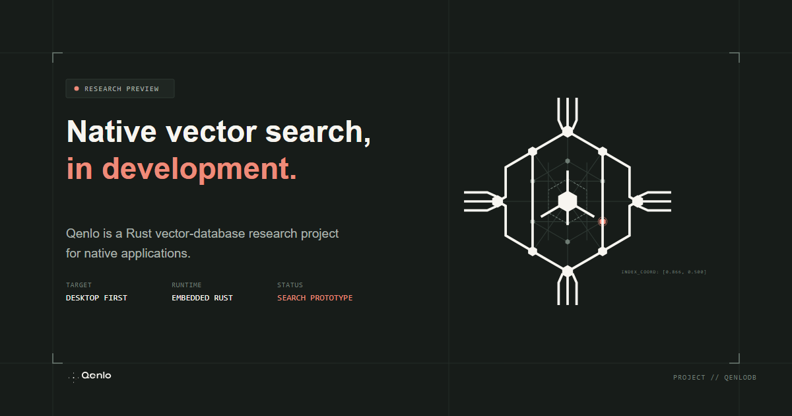

01. Product Truth & Research Scope
Qenlo is a Rust vector-database research project for native applications. The immediate engineering milestone tests a search hypothesis. Desktop comes first; mobile and browser are later targets.
02. Emblem & Multi-Scale Geometry
Mathematical reconstruction preserving hexagonal and radial geometry. Evaluated across 16px, 24px, 32px, 48px, and 128px scales in both light and dark themes.
#F7F5F0

32px#171C19

32px03. Lockup & Documentation Header Context
Horizontal lockup featuring vector-outlined IBM Plex Sans SemiBold letterforms. Zero runtime font dependencies.
lockup.svg
lockup-reversed.svg
04. Palette & Contrast Validation
Semantic token assignments with calculated WCAG contrast ratios against adjacent surfaces.
05. Typography Specimen & Technical Copy
IBM Plex Sans for headings and prose; IBM Plex Mono for code identifiers, configuration, and measurements.
Embedded Vector Retrieval Architecture
Qenlo indexes and searches pre-computed dense vector embeddings in memory-constrained native environments. Embedding generation and NPU inference belong to external runtimes; Qenlo manages graph navigation and distance indexing.
// Prospective embedded index configuration
struct IndexConfig {
dimensions: usize, // e.g. 384 or 768
metric: MetricKind, // Cosine | DotProduct | L2
search_ef: usize, // Beam search width
}Embedded Vector Retrieval Architecture
Qenlo indexes and searches pre-computed dense vector embeddings in memory-constrained native environments. Embedding generation and NPU inference belong to external runtimes; Qenlo manages graph navigation and distance indexing.
// Prospective embedded index configuration
struct IndexConfig {
dimensions: usize, // e.g. 384 or 768
metric: MetricKind, // Cosine | DotProduct | L2
search_ef: usize, // Beam search width
}06. Performance & Benchmark Prototype Specimen
Research specimen placeholder. GPU acceleration and improved filtered-query latency are research objectives, not demonstrated capabilities.
RESEARCH PROTOTYPE
| Dataset / Target | Dimensions | Recall @ 10 | p99 Latency |
|---|---|---|---|
| Cohere Wiki (100k) | 768 | Not yet measured | Not yet measured |
| GloVe English (400k) | 100 | Not yet measured | Not yet measured |
| SIFT Image (1M) | 128 | Not yet measured | Not yet measured |
RESEARCH PROTOTYPE
| Dataset / Target | Dimensions | Recall @ 10 | p99 Latency |
|---|---|---|---|
| Cohere Wiki (100k) | 768 | Not yet measured | Not yet measured |
| GloVe English (400k) | 100 | Not yet measured | Not yet measured |
| SIFT Image (1M) | 128 | Not yet measured | Not yet measured |
07. Social Preview Card (1200 × 630)
Editable vector card and rendered PNG asset for social previews and technical repository cards.
